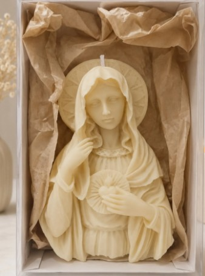

Vela terrazo con fosforera
Envase de cemento terrazo con dos pabilos de madera y un lugarcito para los fósforos.
Velas & objetos deco
Velas en blend de soja y abeja con pabilo de madera, y objetos de microcemento y resina. Las hago de a una, las personalizo en color, aroma y tamaño, y las mando a cualquier punto del país.
Cada pieza sale del taller de a una, nunca en serie.
Dos ceras naturales y pabilo de madera que crepita.
Una vela para vos o cien para tu tienda.
Personalizados en 5 a 7 días, y casi siempre antes. Envíos a todo el país.
Lo que hago
Hola, soy Maca, gracias por pasar. Todo lo que ves acá lo hago yo, en mi taller, de a una pieza por vez. Me gusta pensar que una vela no se termina cuando se apaga: el envase queda en tu mesa, en el baño o en la mesita de luz, y por eso le doy tanta vuelta a cada terminación.
Trabajo con cera de soja y de abeja, microcemento y resina epoxi. Hago velas, souvenirs para que tu evento tenga algo tuyo, regalos para empresas y piezas de deco para mesas y casamientos. Vendo por menor y por mayor, así que tanto si querés un regalo como si tenés una tienda, escribime y lo armamos.
Qué es el blend
Esculpidas, en envase o con forma de flor. Blend de soja y abeja, pabilo de madera y el aroma que elijas.
Bandejas, cuencos y envases hidrolaqueados. Como la bandeja efecto mármol de 24 cm, que se limpia con un trapo.
Bandejas, posavasos y piezas con flores secas atrapadas adentro, cada una con su veta propia.
Casamientos, bautismos, comuniones y cumpleaños. Velas con etiqueta personalizada y centros de mesa.
Con el logo o una tarjeta de tu empresa, en packaging listo para entregar a clientes o al equipo.
Si tenés una tienda de deco o hacés reventa, pedime la lista mayorista por WhatsApp.
Galería
Muchas se pueden pedir en otro color, aroma o tamaño. Si alguna te gusta, consultame disponibilidad.
Envase de cemento terrazo con dos pabilos de madera y un lugarcito para los fósforos.
En lila, rosa viejo y blanco. Quedan lindas solas o en grupo sobre una bandeja.

Esculpida con aureola y corazón en relieve, y presentada en caja para regalar.

Para candelabro, con esferas en relieve. Va bien en mesas de casamiento.

Cada pétalo tallado a mano para un diseño floral realista y único.

Textura de esferas en relieve, para un estante o la mesa ratona.

Envase con terminación artesanal, que después queda como objeto de deco.

Recipiente con diseño en relieve y tapa a juego, reutilizable al terminarse.

Efecto mármol, 24 cm de diámetro, terminación hidrolaqueada y fácil limpieza.

Para un rincón de la casa o para regalar en una comunión o un bautismo.

Para cerrar invitaciones, cartas y paquetes de regalo.

Presentada en caja, lista para regalar.

Con portasahumerio a juego, para un rincón de meditación.
A pedido
Lo hacemos. Contame la idea (una forma, un color, una cantidad) y te digo cómo queda.
Contame tu ideaTienda
Sumá lo que te guste a tu pedido y mandalo por WhatsApp. Te respondo con stock, aromas y costo de envío.
Precios por mayor desde unidades por artículo.
Aceptamos todos los medios de pago
A tu medida
Para un regalo, un casamiento o cien cajas con el logo de tu empresa, el camino es el mismo.
Por WhatsApp o DM de Instagram, con la idea, la cantidad y la fecha que necesitás.
Pieza, color, aroma, etiqueta y packaging. Si querés, te mando una foto de prueba.
Ese es el plazo de un personalizado, aunque casi siempre lo tengo antes. Lo embalo a mano y lo mando a cualquier punto del país.
En un mundo donde todo se genera con inteligencia artificial, crear con las manos es un acto de rebeldía.
Quién soy
En 2020, en plena pandemia, tuve que cerrar el comercio que tenía. Fue un golpe. Con mucho tiempo en casa y la cabeza a mil, hice lo que siempre me había gustado: algo con las manos. Las primeras velas salieron de la cocina, con moldes prestados y bastante más voluntad que técnica.
Se las regalé a mi familia y a mis amigas, y les encantaron. Al tiempo me pedían para regalar ellas, después llegaron pedidos de gente que no conocía, y un día me di cuenta de que esto ya no era un hobby. Ahí decidí dedicarme a Lobo todos los días.
No salió bien de entrada, eh. Velas que se hundían en el medio, flores que se partían al desmoldar, aromas que no se sentían. Hice cursos, probé mezclas hasta dar con el blend de soja y abeja que uso hoy y me quedé muchas noches despierta terminando pedidos. Fallé y volví a empezar más veces de las que puedo contar.
Hoy me llegan muchos pedidos y los disfruto todos. Mis favoritos son los raros: cuando alguien me escribe con una idea que todavía no existe y la hacemos juntos.
Maca, creadora de Lobo
Comunidad
Ahí subo cada pieza nueva, el detrás de escena del taller y lo que tengo disponible.
Preguntas frecuentes
Con un blend de cera de soja y cera de abeja, y pabilo de madera. Los aromas los sumo aparte, según la pieza o lo que pidas.
Es una mezcla de dos ceras naturales. La de soja se quema lento y parejo y toma bien el aroma; la de abeja es más firme, así que las piezas esculpidas mantienen la forma y no se ablandan con el calor. Juntas dan una vela que dura más y se ve mejor.
Sí, vendo por menor y por mayor. Si tenés una tienda de deco, un local o hacés reventa, escribime por WhatsApp y te paso la lista mayorista. En la tienda de acá arriba podés cambiar a "Por mayor" para ver esos precios.
Sí: casamientos, bautismos, comuniones, cumpleaños y baby showers. Elegís pieza, color, aroma y etiqueta, y armo la cantidad que necesites. Cuanto antes me escribas, mejor, porque cada pieza lleva su tiempo.
Sí. Armo velas y objetos con el logo o una tarjeta de la empresa, en packaging listo para entregar, para fin de año, eventos o clientes.
Todos: transferencia, Mercado Pago, tarjetas de débito y crédito, y efectivo.
Entre 5 y 7 días, y la mayoría de las veces sale antes: apenas está lista la pieza, la despacho. Lo que está en stock sale enseguida. Para cantidades grandes (souvenirs o empresas) te paso el plazo exacto cuando hablamos.
Sí, envío a cualquier punto de Argentina. Cada pieza va embalada a mano para que llegue entera.
Armá tu pedido en la tienda y tocá "Enviar por WhatsApp": me llega con todo el detalle y te confirmo stock, aroma y envío. También podés escribirme por DM a @lobo.objetosyvelas.
La primera vez dejala prendida hasta que se derrita toda la superficie, así no hace un pozo en el medio. Antes de cada uso cortá el pabilo de madera a unos 3 mm y no la dejes prendida más de 3 o 4 horas seguidas.
Sí. Los envases de microcemento están pensados para quedarse: cuando la vela se termina, sirven como maceta, portacosas o porta sahumerios.
Envíos y pagos
Lo que está en stock sale enseguida y los personalizados tardan de 5 a 7 días, aunque casi siempre los tengo antes. Todo va embalado a mano para que llegue entero.
Consultar mi envíoContacto
Escribime por WhatsApp o Instagram y te ayudo a elegir la vela u objeto que buscás.